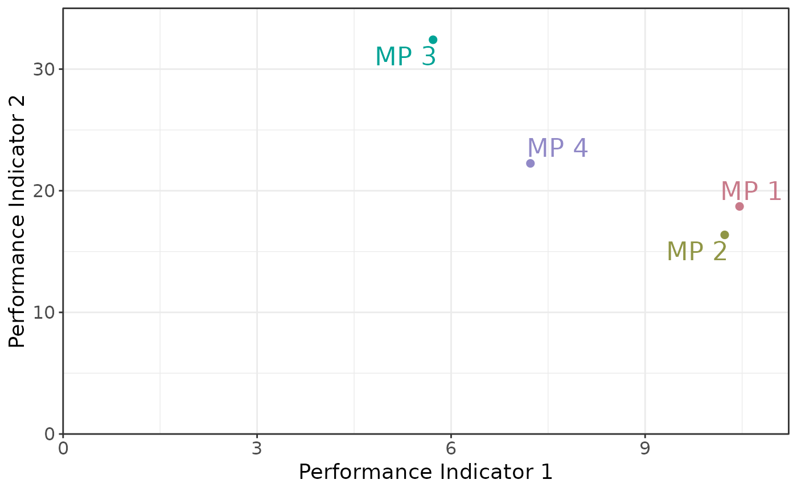
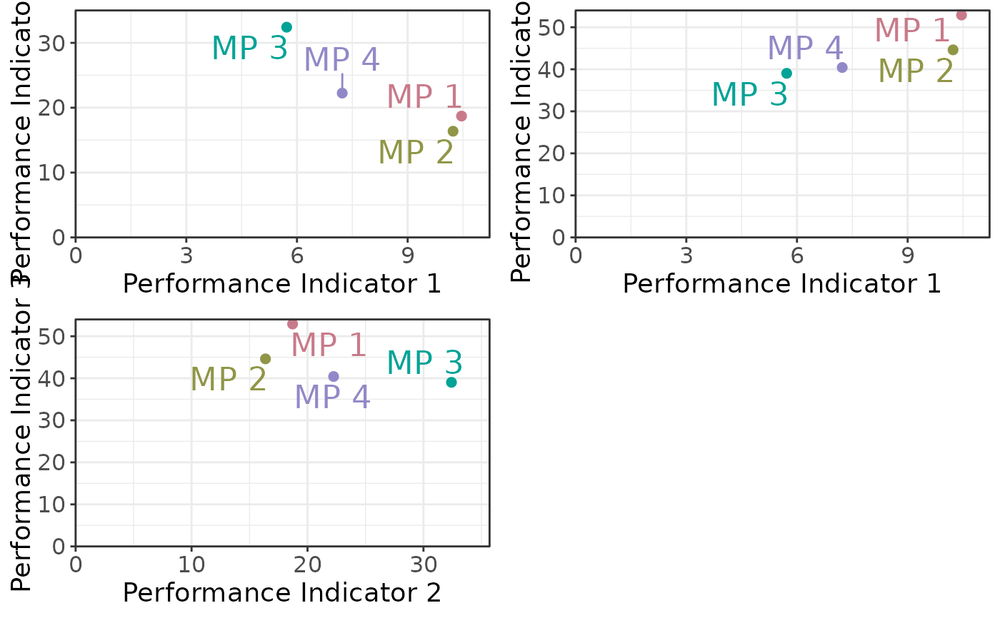

Plot Tradeoff
Usage
plotTradeoff(
slick,
xPI = NULL,
yPI = NULL,
OMs = NA,
MP_label = "Code",
lab_size = 6,
point_size = 2,
size.axis.title = 14,
size.axis.text = 12
)Arguments
- slick
A
Slick-class()object- xPI
Numeric value indicating the PI to plot on the x-axis. Multiple values are accepted. Recycled if
xPI<yPI- yPI
Numeric value indicating the PI to plot on the y-axis. Multiple values are accepted. Recycled if
yPI<xPI- OMs
Integers representing the OMs to include in the plot. Defaults to all.
- MP_label
Label to use for the MPs. Either
CodeorLabel.Descriptionworks as well, but you probably don't want to do that.- lab_size
Size of the MP labels
- point_size
Size of the points
- size.axis.title
Size of axis title
- size.axis.text
Size of axis text
Examples
# Generate dummy values
nOM <- 2
nMP <- 4
nPI <- 4
values <- array(NA, dim=c(nOM, nMP, nPI))
pi_means <- runif(nPI, 5, 50)
for (om in 1:nOM) {
for (mp in 1:nMP) {
for (pi in 1:nPI) {
values[om, mp, pi] <- rlnorm(1,log(pi_means[pi]), 0.4)
}
}
}
# Create and populate Object
tradeoff <- Tradeoff(Code=c('PI1', 'PI2', 'PI3', 'PI4'),
Label=c('Performance Indicator 1',
'Performance Indicator 2',
'Performance Indicator 3',
'Performance Indicator 4'),
Description = c('This is the description for PI 1',
'This is the description for PI 2',
'This is the description for PI 3',
'This is the description for PI 4'),
Value=values)
# Check
Check(tradeoff)
#>
#> ── Checking: "Tradeoff" ──
#>
#> ✔ Complete
# Add to `Slick` object
slick <- Slick()
Tradeoff(slick) <- tradeoff
# Plots
plotTradeoff(slick)
#> ℹ Note: `MPs` is empty. Using default MP names and colors

plotTradeoff(slick, c(1,1,2), c(2,3,3))
#> ℹ Note: `MPs` is empty. Using default MP names and colors
